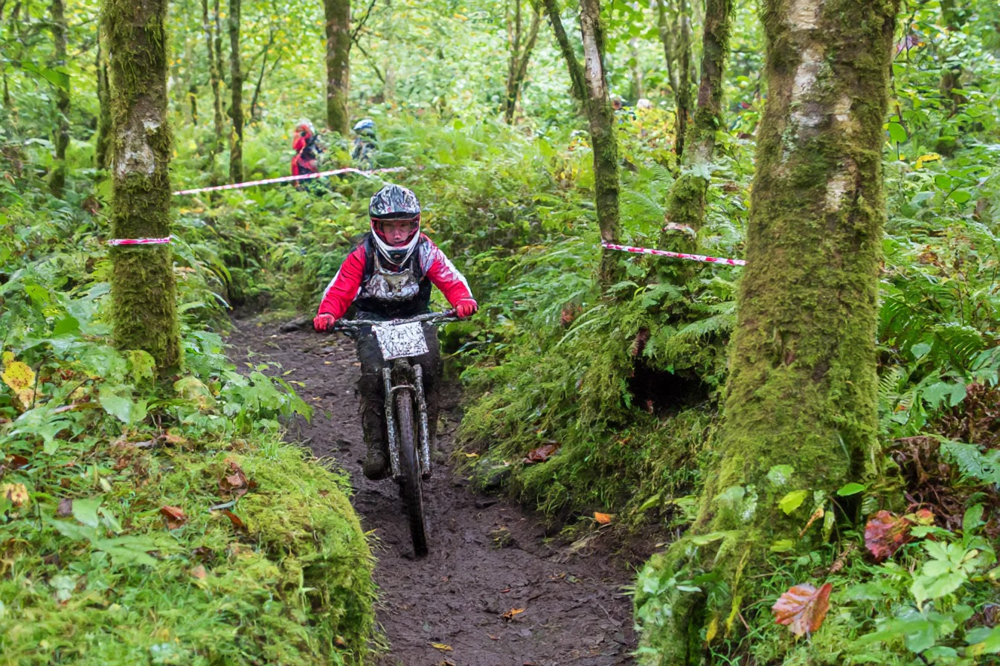
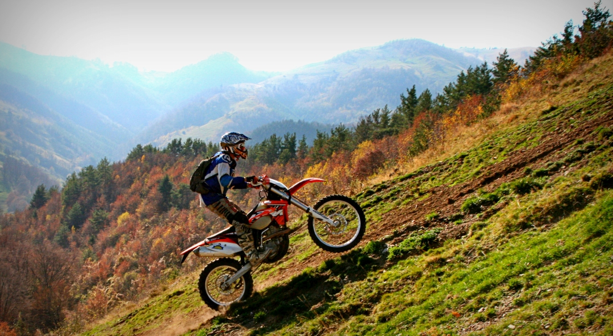
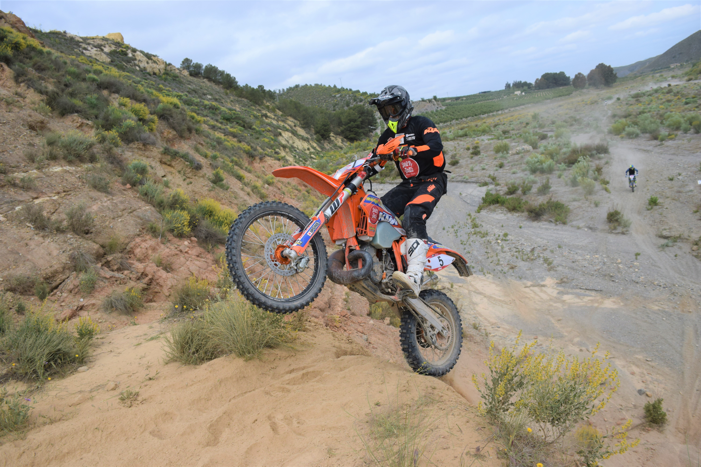
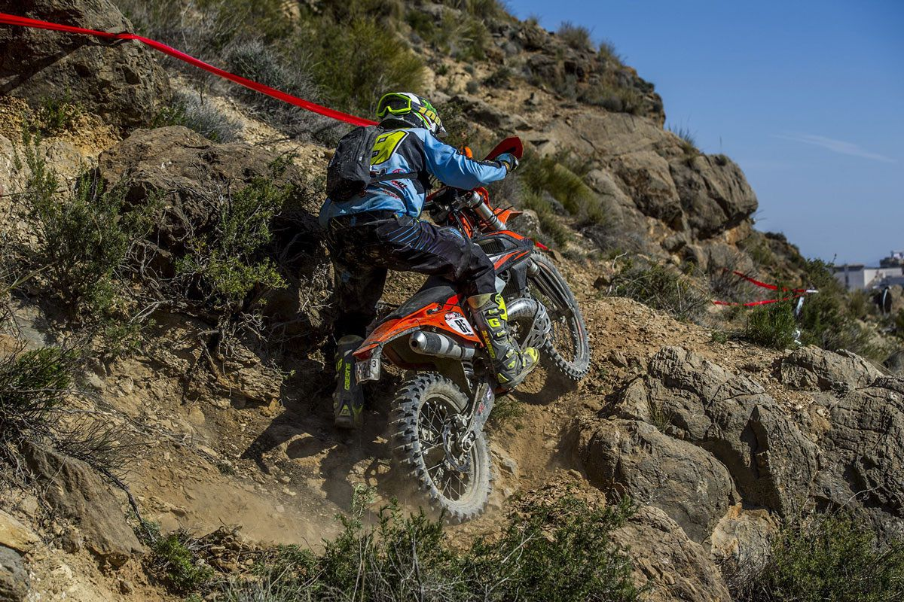

Explora senderos épicos, trialeras técnicas y rutas OFF-ROAD por Torrelles de Llobregat.

Ruta ideal para principiantes. Caminos forestales anchos, subidas suaves y senderos fáciles por la zona baja de Torrelles.

Ruta por senderos entre bosque mediterráneo, con curvas cerradas y zonas de piedra suelta.

Subidas agresivas, bajadas técnicas y trialeras por las montañas de Begues y Torrelles.

La ruta más extrema de EnduroTech. Escalones naturales, barro profundo y trialeras cerradas.